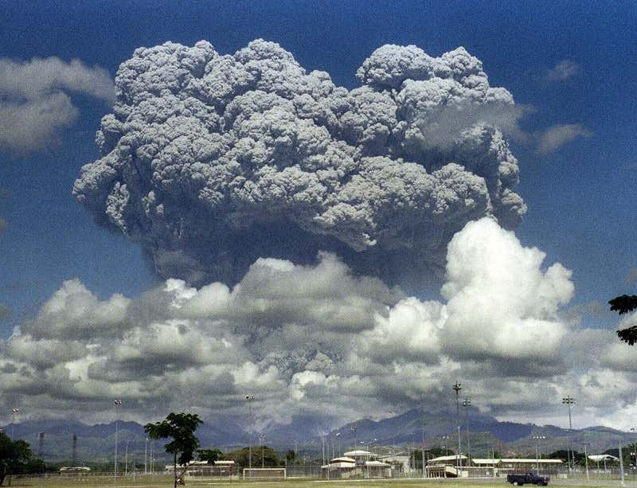
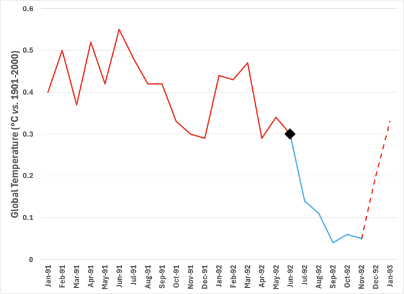

TL;DR: Volcanic eruptions produce airborne dust clouds that reflect sunlight and cool the Earth. Can we use this knowledge to lessen the effect of rising carbon dioxide? Maybe. But if we do, we’re flying blind because fear-mongering, environmentalist zealots have created a self-serving narrative that prevents exploration of plausible solutions. Journalists who rely on the oppositional narrative of bothsidesism make the rational approach untenable.
I covered an earlier installment of this New York Times series, “Buying Time,” which reported on one approach to geoengineering: creating artificial clouds over the ocean to reflect more sunlight. I followed this story to its sordid end, where the Alameda City Council chose to ban spraying salt water into San Francisco Bay as a potential health hazard.
We’re going with the comic default of “Don’t just do something; stand there!”
On August 4, the second installment , entitled “This Scientist Has a Risky Plan to Cool Earth. There’s Growing Interest.” Based on the result of the first installment, I am on the edge of my seat! The author of this one is David Gelles, an experienced journalist without scientific training. His main claim to fame (outside his long newspaper career) is as the author of an “advice” book entitled “The Man Who Broke Capitalism: How Jack Welch Gutted the Heartland and Crushed the Soul of Corporate America -- and How to Undo His Legacy.” Read it if you’d like, but advice on big business from a journalist might be a bit sketchy.
The experimental science underpinning this article came from a natural event, the June 15, 1991, eruption of Mount Pinatubo, an active volcano in the Philippines. The title scientist with the “risky” plan is Prof. David Keith of the University of Chicago’s Department of Geophysical Sciences and head of that department’s Climate Systems Engineering initiative.
The audacious plan is to mimic the cooling effect of a volcanic eruption:

This enormous dust cloud had a small, measurable impact on Earth’s albedo (its reflectivity to sunlight), plausibly resulting in cooling. The explanation is simple: Airborne aerosols scatter, absorb, and reflect sunlight, providing a sunshade for the Earth by reducing the amount that makes it to the surface. Here’s what the data says:

It’s a modest but significant effect over a short period.
Dr. Keith has nobly devoted his decades-long career to investigating practical engineering solutions to climate problems. In 2018, after nearly 20 years of planning, he and colleagues devised a pivotal experiment to provide valuable data to help reduce the risks associated with creating these aerosols in practice. The SCoPEx experiment (for Stratospheric Controlled Perturbation Experiment) involved launching a weather balloon with a few pounds of powder into the stratosphere to measure what happens when a small amount of dust is released in a controlled manner. This is far less impactful than what Pinatubo did “naturally” or even what jet contrails do daily. It is also on a much, much, much smaller scale than the infamous Castle Bravo experiment of the 1950s (the H-bomb test that introduced the word “fallout” into our vocabulary). [Even that ‘experiment’ was less than 10% of Pinatubo.] Despite the scale, this experiment evoked the same Chicken Little, over-the-top fear of the unknown response. That’s precisely what a controlled experiment is supposed to relieve, but among “non-profits,” fear begets clicks begets donations.
Stepping back from the article momentarily, consider that a well-designed experiment is much more valuable than any model. We launch space probes, test cancer drugs, and try new products ourselves because we cannot know the outcome until we see it manifest. Experiments don’t prescribe a solution but, instead, determine what is possible through observation. The only objections to an experiment should be to its design. Ideally, the outcome is genuinely unpredictable, and the experiment definitively rules out competing explanations. The absurdity of thinking otherwise is evident from unscientific declarations like “known to the State of California to cause Cancer 1 .”
As you might have guessed by now, the SCoPEx experiment never happened because of objections to exploring any geoengineering approach by councils of, get this, “Indigenous People”! And, naturally, that’s what Gelles chose to report on. In addition to various tribes, here’s the rogue’s gallery of objectors:
-
David Suzuki, Professor Emeritus of Zoology at the University of British Columbia. He is the former host of The Nature of Things , a CBC documentary series. He has turned eco-grifter with the David Suzuki Foundation .
-
Raymond Pierrehumbert , Halley Professor of Atmospheric Physics at Oxford. A worthy opponent in the same field of science and worth paying attention to.
-
Shuchi Talati, PhD in Engineering & Public Policy from Carnegie Mellon, and founder of an inside-the-Beltway non-profit organization called the Alliance for Just Deliberation on Solar Geoengineering . It’s a new organization supporting a polling project that asks: “How do youth in climate-vulnerable communities view SG [Solar Geoengineering] as a possible climate change response measure, and how can these perspectives improve SG science and technological development?” As if the climate cares about human opinions!
-
Greta Thunberg, the Swedish climate activist. She is not a scientist.
-
Beatrice Rindevall is the chairwoman of the Swedish Society for Nature Conservation, another eco-grifter organization. She is not a scientist.
Gelles blatantly pushes his agenda, saying, “[M]any scientists and environmentalists fear that it could result in unpredictable calamities.” I’d argue that most objections come from self-interested eco-grifters, for whom fear is the coin of the realm. What does Prof. Keith conclude from the aborted SCoPEx experiment? He is quoted, “A lesson I’ve learned from this is that if we do this again, we won’t be open in the same way.” There goes transparency.
Let’s examine the most scientifically-qualified objector, Prof. Pierrehumbert. What is his objection? His argument is as follows: If we start blocking sunlight with aerosols, we would have to continue blocking it (at levels commensurate with the carbon dioxide already emitted) until geologic carbon as an energy source had been wholly replaced and natural forces bring carbon dioxide levels back down naturally. A “termination shock” might occur if we didn't, where a newly exposed planet would warm very quickly. It is a valid concern, but it is only worth worrying about if a solar geoengineering system were already employed. It is not an argument against experimenting.
A collaborator of Dr. Keith’s on SCoPEx summarized this problem succinctly:
I compare solar geoengineering to opiates. They’re really strong painkillers in that they only treat a symptom and not the actual cause. You can get addicted if you don’t address the cause. Like any painkiller, you’re going to have side effects; the idea that you can have a strong painkiller without side effects is not true. And, as for the withdrawal symptoms, that’s the termination shock. For me, from the physical science perspective, termination shock is the biggest concern. — Stonington Professor of Engineering and Atmospheric Science at Harvard, Frank Keutsch, as quoted here .
Our problem is a failure to recognize the bigger picture: As humans, we’ve used our clever application of science and technology to create the modern world with the unintended consequence of global warming. We must test any plausible approaches so that we’re not caught with options that rely on imperfect models.
I do not believe that Earth will revert if we stop burning geologic carbon cold turkey. The planetary consequences of such a drastic action would make us an accessory to involuntary manslaughter at a genocidal scale. We must aim to heal Earth through applied technology and ingenuity, not by trying to turn back the clock. Regret is understandable. Paralysis is unforgivable.
The issue isn’t that some chemicals have been linked to a higher incidence of certain cancers; that’s been well-established. The scientific problem is that correlation doesn’t imply causation. Such a cause-effect relationship is challenging to establish unequivocally, and the State of California has no extra-special power to legislate scientific conclusions. All this ridiculous declaration does is provoke an unfounded fear of nameless “chemicals” in the name of the a.